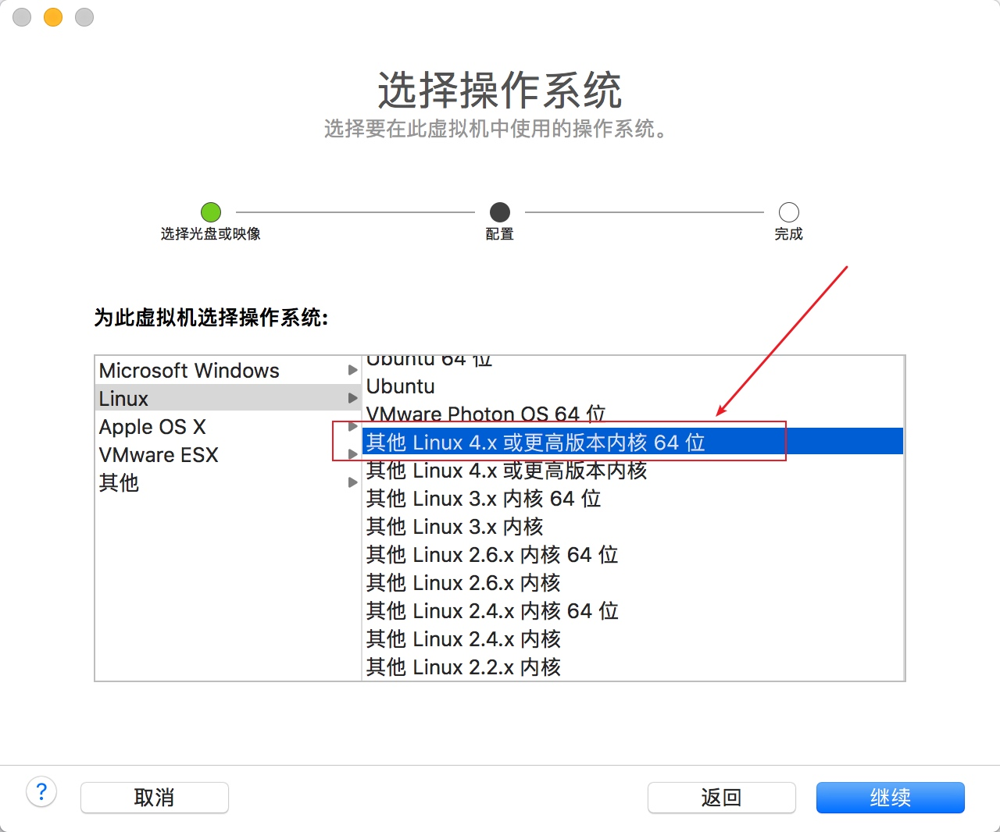
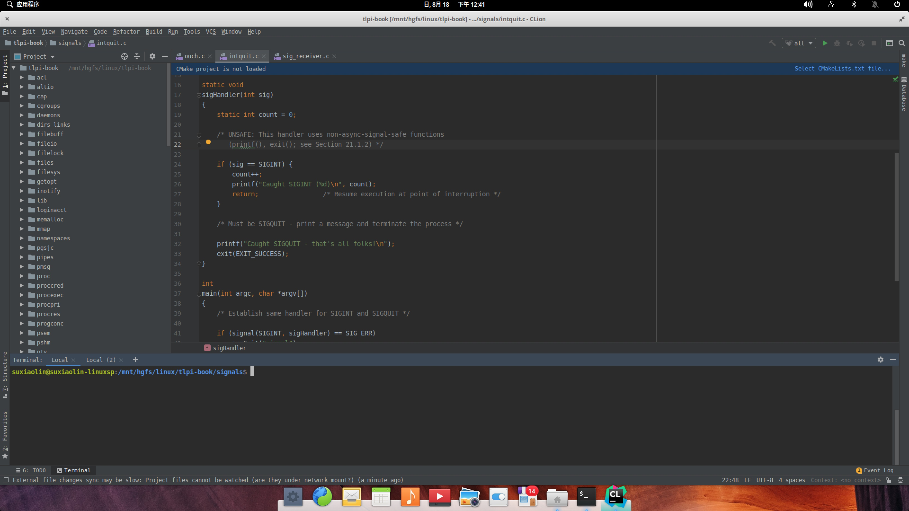
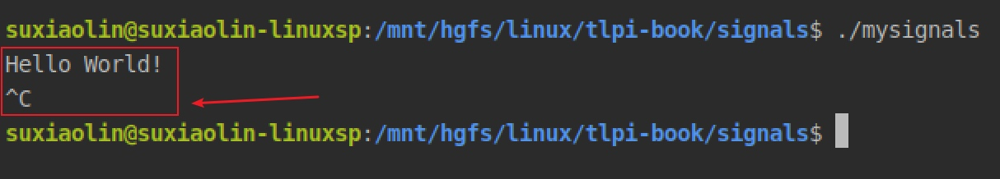
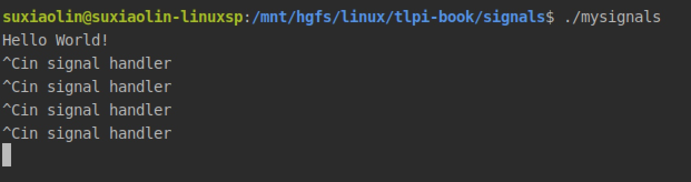
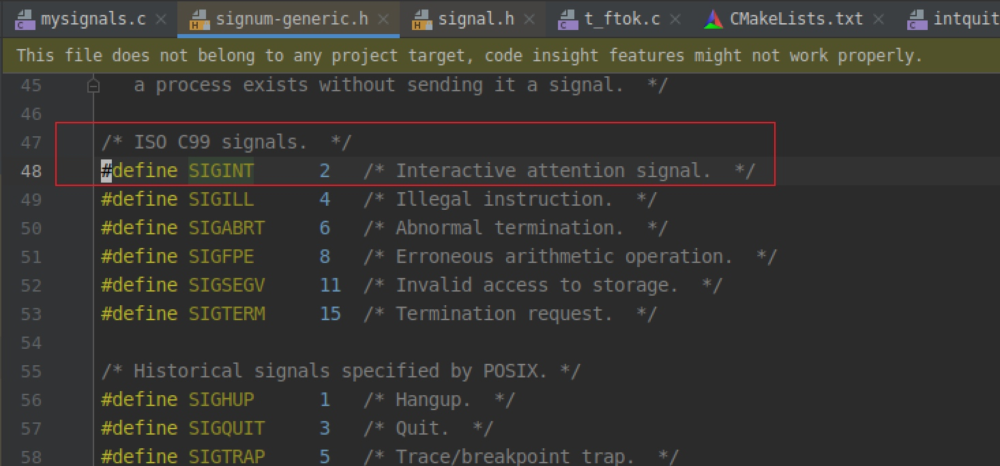
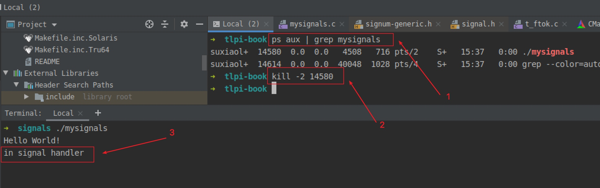
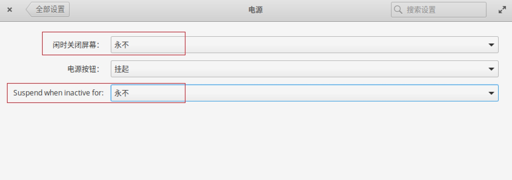

linux系统编程，主要使用c语言，c++是c的超集，也是可以的
完整项目代码已上传github：https://github.com/neatlife/my-tlpi-book
获取可用环境
可以使用虚拟机安装一个linux系统进行linux系统开发，虽然mac os和linux非常相似，但是和linux还是有很多小区别的，装虚拟机是最省事的
这里使用elementary os，下载地址参考：https://elementary.io/zh_CN/
安装时，选linux 4.x以上的内核版本即可

界面效果如下：

安装时可以选英文，安装后再改成中文
C语言标准库
标准库中包含下面的库
- assert.h
- ctype.h
- errno.h
- float.h
- limits.h
- locale.h
- math.h
- setjmp.h
- signal.h
- stdarg.h
- stddef.h
- stdio.h
- stdlib.h
- string.h
- time.h

这些库中一般都包含一些结构体和几个函数，其中输入输出库stdio.h, 一般函数库（malloc、free等）stdlib.h,字符串处理库string.h最常用了
线程库pthread.h默认支持linux，windows需要额外安装，参考：https://sourceforge.net/projects/pthreads4w/
进程创建销毁(fork、wait)等在unistd.h库，默认支持linux
一个例子-替换信号处理
对一个运行中的程序执行快捷键 Ctrl + C 默认会中断程序的运行，并使得程序退出
#include <stdio.h>
#include <signal.h>
int
main(int argc, char *argv[])
{
printf("Hello World!");
sleep(300);
}
效果如下

可以看到当按下ctrl c的时候，程序立马就退出了，这是因为当按下ctrl c时shell终端向程序发送了SIGINT信号。
默认SIGINT信号的处理是终止程序的运行，可以通过signal.h库中的signal函数注册一个新的SIGINT信号的处理程序替代默认行为，比如受到SIGINT时，简单打印一个字符串
#include <stdio.h>
#include <stdlib.h>
#include <signal.h>
#include <unistd.h>
static void
mySigHandler(int sig)
{
printf("in signal handler\n");
}
int
main(int argc, char *argv[])
{
if (signal(SIGINT, mySigHandler) == SIG_ERR) {
printf("替换信号处理器异常\n");
exit(1);
}
printf("Hello World!\n");
while (1) {
sleep(300);
}
}
效果如下

可以看到已经成功接管了程序对SIGINT信号的默认处理了
也可以使用kill命令对一个程序发送SIGINT信号，SIGINT常理定义再signum-generic.h头文件中

对应的数字是2，对应的kill命令就是 kill -2 进程id

可以看到通过kill工具把SIGINT信号传给进程了
一些注意的点
对程序发送SIGINT信号时，程序会从sleep状态中醒过来，可以通过无限循环让程序持续运行
while (1) {
sleep(300);
}
关闭虚拟机的节能选项，防止虚拟机经常进入随眠/退出状态

gsettings reset org.gnome.desktop.interface monospace-font-name
gsettings set org.gnome.desktop.interface cursor-blink false
gsettings set io.elementary.files.preferences single-click false
SIGINT信号被替换了，ctrl c 无法终止程序了，可以使用SIGKILL信号(代号9)终止即kill -9 pid，SIGKILL信号的处理函数是无法替换的，放心使用。
可以选择ubuntu作为开发环境，这样环境问题会比较少